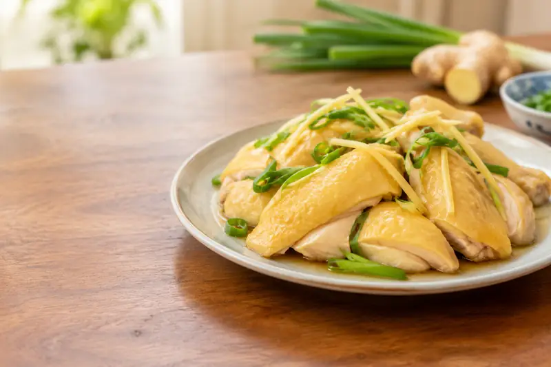

Main主菜 · Cantonese粤
Cantonese Poached Chicken with Ginger-Scallion Oil白切鸡配姜葱蓉
The chicken behind the Cantonese saying that no banquet is complete without one. A whole bird steeps in barely simmering water, then plunges into ice water for taut skin and silky meat, eaten with ginger-scallion oil. Simple, but all about heat: the water must never boil hard, and it is at its best just cooked through.广东人「无鸡不成宴」说的就是这只鸡。整鸡在微滚的水里浸熟，再泡冰水，皮爽肉滑，靠一碟姜葱蓉蘸着吃。做法简单，难在火候：水不能大滚，熟到刚好、骨边带一点粉红才是最嫩的。

Ingredients食材
- Whole chicken整鸡 1600 g · 1 whole chicken (about 1.6 kg), giblets removed整鸡 1 只（约 1.6 公斤），去内脏
- Ginger姜 60 g · a large knob: half sliced for the pot, half grated for the sauce1 大块：一半切片煮鸡，一半磨蓉做蘸料
- Green onions大葱/小葱 80 g · 6 stalks: half knotted for the pot, half minced for the sauce6 根：一半打结煮鸡，一半切细做蘸料
- Shaoxing wine料酒(绍兴) 15 g · 1 tbsp1 汤匙
- Salt盐 8 g · about 1.5 tsp (for the skin and the sauce)约 1.5 茶匙（擦鸡和蘸料）
- Canola oil菜籽油 42 g · 3 tbsp, for the sauce3 汤匙，蘸料用
Weights are as bought, before trimming or peeling. Costco pack sizes and availability vary; see each ingredient page.重量为买回来的原重（去皮去骨之前）。Costco 规格与有无随时变化，点食材名看详情。
Method做法
- Rinse the chicken, rub it inside and out with 1 tsp salt and let it come to room temperature for 30 minutes.整鸡洗净，用 1 茶匙盐把表皮和腹腔擦一遍，回温 30 分钟。
- Bring a pot of water big enough to cover the bird to a boil with the sliced ginger, onion knot and wine.大锅水（能没过鸡）加姜片、葱结和料酒烧开。
- Holding it by the neck, dip the chicken in for 5 seconds and lift it out, three times.提着鸡脖子把鸡放进水里浸 5 秒再提出，重复三次。
- Lower it in, and when the water just returns to a simmer turn the heat to the lowest and cover for 25 minutes.整只放入，水再微滚后转最小火，盖盖浸 25 分钟。
- Turn off the heat and leave 10 more minutes, until the thickest part of the thigh reads 82°C.关火再焖 10 分钟，大腿最厚处插温度计到 82°C。
- Lift it straight into ice water for 15 minutes.捞出马上放进冰水泡 15 分钟。
- Put the grated ginger, minced onion and remaining salt in a bowl and pour over smoking-hot oil.姜蓉、葱末和剩下的盐放碗里，浇上烧到冒烟的热油。
- Drain the chicken, chop into pieces and serve with the ginger-scallion oil.鸡沥干斩件，配姜葱蓉上桌。
Keys to success成功要点
- Dipping three times evens out the temperature inside and out so it cooks evenly and the skin stays intact.「三提三放」让腹腔内外温度一致，鸡里外同时熟，皮也不会破。
- Never let it boil hard, which splits the skin and dries the meat; gentle steeping is what keeps it silky.全程不能大滚，大火会把鸡皮煮破、肉煮柴；靠热水浸熟才嫩。
- The ice bath tightens the skin for a crisp snap and sets the gelatin beneath it.冰水一激，鸡皮收紧变爽脆，皮下的胶质也凝住了。
Common problems常见失败与补救
- It is still red at the bone骨头边还是红的
A large bird or not warmed enough. Return it to the hot water for 5-8 minutes; go by 82°C in the thigh.鸡太大或回温不够。放回热水再浸 5–8 分钟；以大腿 82°C 为准。 - The skin tore鸡皮破了
The water boiled too hard. Next time keep it so low that only tiny bubbles show.水滚得太厉害。下次火调到最小，水面只冒很小的泡。
Watch it done视频参考
A Cantonese chef's white-cut chicken; ten minutes, nearly 600,000 views.粤菜大厨讲广东白斩鸡，10 分钟，播放近六十万。
Lao Fan Gu's version, which per the title hinges on the ice bath; nine and a half minutes.老饭骨的白切鸡，标题写明关键在浸冰水，9 分半钟。
Videos load only when you tap them (youtube-nocookie). Creators are credited; we do not host their videos.点了才加载视频（youtube-nocookie）。署名原作者，本站不托管视频。
Nutrition营养
| Energy热量 | 697 kcal |
| Protein蛋白质 | 51.2 g |
| Fat脂肪 | 51.6 g |
| of which saturated其中饱和脂肪 | 12.5 g |
| Carbohydrate碳水化合物 | 4.1 g |
| Fibre膳食纤维 | 0.8 g |
| Sodium钠 | 994 mg |
High sodium钠偏高 Sodium tiers: under 345 mg lower, 345-689 mg moderate, 690 mg and above high (this site's tiers; 15% of the 2,300 mg daily reference = 345 mg).钠分档：低于 345 mg 较低，345–689 mg 中等，690 mg 及以上偏高（本站分档；345 mg ＝ 每日参考 2300 mg 的 15%）。
Computed from the Canadian Nutrient File (Health Canada) with the weights above; oil and sauces are counted in full. Real dishes differ.按加拿大营养素数据库和上面的重量计算；油和酱汁按全量计入，实际会略低。
Good to know适合 / 需注意
- About 51.2 g protein per serving, a protein-rich meal (adult reference intake roughly 50-60 g/day; needs vary).每份蛋白质约 51.2 g，属于蛋白质较高的一餐（成人每日参考量约 50–60 g，个体差异大）。
- About 994 mg sodium per serving (about 43% of the 2,300 mg daily reference), on the high side; use less soy sauce or salt, and pair with unsalted sides.每份钠约 994 mg（约占每日参考 2300 mg 的 43%），偏高；少放酱油或盐，或搭配无盐主食与蔬菜。
- About 12.5 g saturated fat per serving (daily reference about 20 g), on the high side; use a leaner cut or remove skin.每份饱和脂肪约 12.5 g（每日参考约 20 g），偏高；可换瘦肉部位或去皮。
- Contains allergens: Wheat / gluten.含过敏原：小麦/麸质。
Poaching adds no fat; most of the oil is in the dip, so you control how much you take, and skinless meat is leaner.浸煮不加油，大部分油在蘸料里，蘸多少自己控制；鸡皮脂肪多，想清淡可以去皮吃。